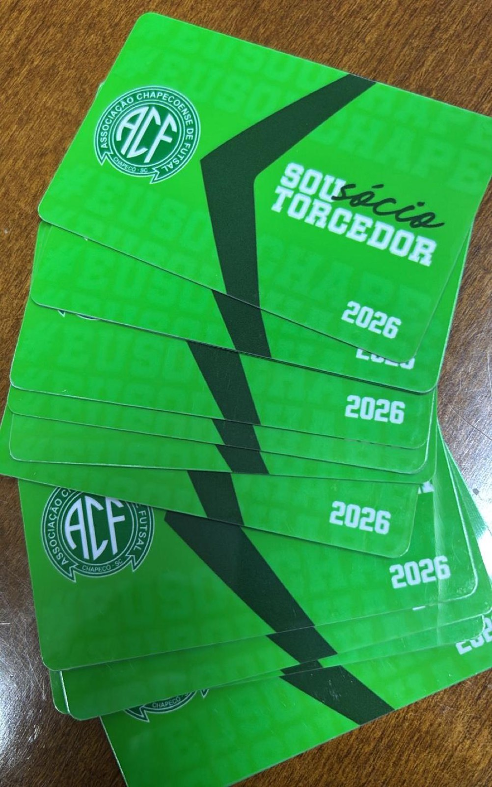
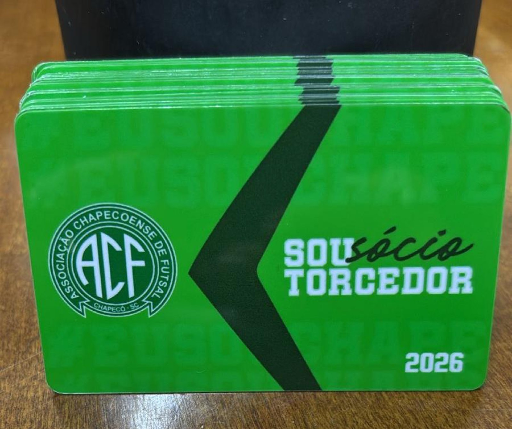

A Associação Chapecoense de Futsal anunciou a abertura de um lote extra e limitado de planos de sócio. A iniciativa visa atender à alta demanda dos torcedores na semana de estreia do time no Campeonato Brasileiro da modalidade.
A adesão já está liberada. São apenas 100 planos disponíveis. O Verdão das Quadras manteve o valor original aplicado no início do ano: R$ 300,00, com possibilidade de parcelamento em até cinco vezes no cartão de crédito. É possível se tornar sócio na Loja Oficial da Chape Futsal (na rua Paulo Marques, entre as avenidas Fernando Machado e Porto Alegre), pelo site chapefutsal.socioclube.com.br e pelo WhatsApp (49) 9975-1964.

Ao se associar, o torcedor garante uma camisa oficial da Chape Futsal e a carteirinha que dá acesso livre a todas as partidas em casa nas quatro competições até o fim desta temporada. São elas: Campeonato Brasileiro, Copa Santa Catarina, Série Ouro do Catarinense e a Copa Sul.
O presidente do clube, Clayton Tressoldi, destacou a importância da sinergia com as arquibancadas para o início das competições nacionais. "O ano passado fizemos uma ótima campanha com o seu apoio. E sábado (4/7) estaremos aqui (no SESC) novamente para estrear contra a equipe do Criciúma, um jogo muito difícil. E pensando em você, torcedor, a Chapecoense preparou mais 100 planos de sócios", afirmou.
Clayton Tressoldi reforçou o convite para a torcida assegurar o acesso antes que as vagas se esgotem. "Aproveite o mesmo valor do começo do ano. Associe-se em cinco vezes no cartão, ganhe a camisa oficial e mais a carteirinha para acompanhar todos os jogos", completou.

Não fique de fora
A estreia da equipe Prefeitura de Chapecó/Chapecoense/Unochapecó no Brasileiro 2026 ocorre neste sábado (4/7) contra o Criciúma, no ginásio do SESC, em Chapecó, às 16h. O duelo terá transmissão pelo canal BandSport e no Youtube através da CBFS TV e Ulisses TV. Em 2025, a Chape conquistou um histórico terceiro lugar e faturou a inédita vaga à Supercopa do Brasil, que foi em fevereiro, na cidade de Erechim (RS).
Crédito das fotos: Chape Futsal